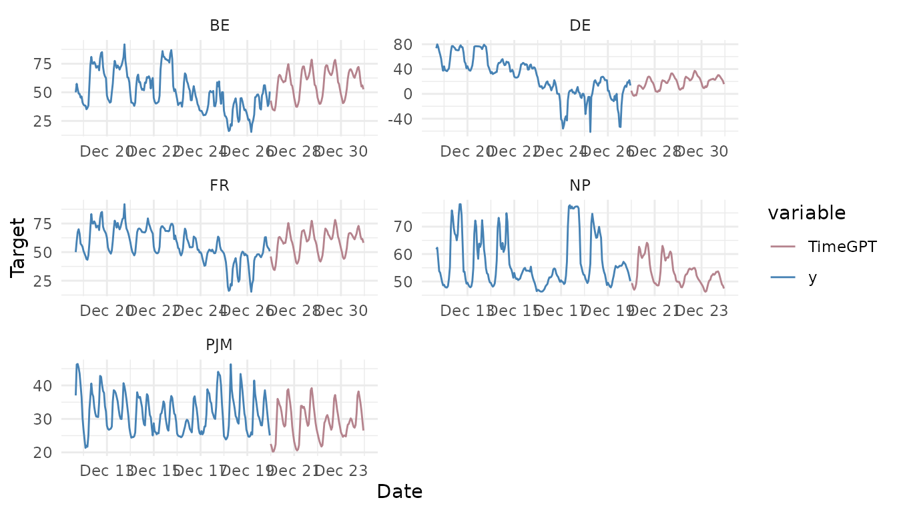

Long-Horizon Forecasting
long-horizon.Rmd
library(nixtlar)
#> Registered S3 method overwritten by 'tsibble':
#> method from
#> as_tibble.grouped_df dplyr1. Long-horizon forecasting
For some problems, it is necessary to forecast long horizons. Here “long horizons” refer to predictions that exceed more than two seasonal periods. For instance, this means predicting more than 48 hours ahead for hourly data, and more than 7 days for daily data. The specific definition of “long horizon” varies according to the frequency of the data.
TimeGPT features a specialized model designed for
long-horizon forecasting. This model is trained to predict far into the
future, where the uncertainty increases as the forecast extends further.
Here we’ll explain how to use the long horizon model of
TimeGPT.
This vignette will explain how to do this. It assumes you have already set up your API key. If you haven’t done this, please read the Get Started vignette first.
2. Load data
For this vignette, we’ll use the electricity consumption dataset that
is included in nixtlar, which contains the hourly prices of
five different electricity markets.
df <- nixtlar::electricity
head(df)
#> unique_id ds y
#> 1 BE 2016-10-22 00:00:00 70.00
#> 2 BE 2016-10-22 01:00:00 37.10
#> 3 BE 2016-10-22 02:00:00 37.10
#> 4 BE 2016-10-22 03:00:00 44.75
#> 5 BE 2016-10-22 04:00:00 37.10
#> 6 BE 2016-10-22 05:00:00 35.61For every unique_id, we’ll try to predict the last 96
hours. Hence, we’ll separate the data into training and test
datasets.
test <- df |>
dplyr::group_by(unique_id) |>
dplyr::slice_tail(n = 96) |>
dplyr::ungroup()
train <- df[df$ds %in% setdiff(df$ds, test$ds), ]3. Forecast with a long-horizon
To use the long-horizon model of TimeGPT, set the
model argument to timegpt-1-long-horizon.
fcst_long_horizon <- nixtlar::nixtla_client_forecast(train, h=96, id_col="unique_id", model="timegpt-1-long-horizon")
#> Frequency chosen: H
head(fcst_long_horizon)
#> unique_id ds TimeGPT
#> 1 BE 2016-12-27 00:00:00 42.73139
#> 2 BE 2016-12-27 01:00:00 38.03034
#> 3 BE 2016-12-27 02:00:00 35.11705
#> 4 BE 2016-12-27 03:00:00 34.53508
#> 5 BE 2016-12-27 04:00:00 34.11481
#> 6 BE 2016-12-27 05:00:00 38.363564. Plot the long-horizon forecast
nixtlar includes a function to plot the historical data
and any output from nixtlar::nixtla_client_forecast,
nixtlar::nixtla_client_historic,
nixtlar::nixtla_client_detect_anomalies and
nixtlar::nixtla_client_cross_validation. If you have long
series, you can use max_insample_length to only plot the
last N historical values (the forecast will always be plotted in
full).
When using nixtlar::nixtla_client_plot with the output
of nixtlar::nixtla_client_detect_anomalies, set
plot_anomalies=TRUE to plot the anomalies.
nixtlar::nixtla_client_plot(train, fcst_long_horizon, id_col="unique_id", max_insample_length = 200)
#> Frequency chosen: H
5. Evaluate the long-horizon model
To evaluate the long-horizon forecast, we’ll generate the same
forecast with the default model of TimeGPT, which is
timegpt-1, and then we’ll compute and compare the Mean Absolute
Error (MAE) of the two models.
fcst <- nixtlar::nixtla_client_forecast(train, h=96, id_col="unique_id")
#> Frequency chosen: H
head(fcst)
#> unique_id ds TimeGPT
#> 1 BE 2016-12-27 00:00:00 45.21922
#> 2 BE 2016-12-27 01:00:00 42.56666
#> 3 BE 2016-12-27 02:00:00 41.55990
#> 4 BE 2016-12-27 03:00:00 39.12502
#> 5 BE 2016-12-27 04:00:00 36.47087
#> 6 BE 2016-12-27 05:00:00 37.22281We’ll rename the TimeGPT long-horizon model to merge it
with the default TimeGPT model. We’ll then merge them with
the actual values from the test set and compute the MAE. Note that in
the output of the nixtla_client_forecast function, the
ds column contains dates. This is because the
nixtla_client_plot uses the dates to make the plot.
However, to merge the actual values, we’ll convert them to
characters.
names(fcst_long_horizon)[which(names(fcst_long_horizon) == "TimeGPT")] <- "TimeGPT-long-horizon"
res <- merge(fcst, fcst_long_horizon) # merge TimeGPT and TimeGPT-long-horizon
res$ds <- as.character(res$ds)
res <- merge(test, res) # merge with actual values
head(res)
#> unique_id ds y TimeGPT TimeGPT-long-horizon
#> 1 BE 2016-12-27 01:00:00 38.33 42.56666 38.03034
#> 2 BE 2016-12-27 02:00:00 41.04 41.55990 35.11705
#> 3 BE 2016-12-27 03:00:00 34.62 39.12502 34.53508
#> 4 BE 2016-12-27 04:00:00 29.69 36.47087 34.11481
#> 5 BE 2016-12-27 05:00:00 28.35 37.22281 38.36356
#> 6 BE 2016-12-27 06:00:00 30.99 42.28119 47.14342
print(paste0("MAE TimeGPT: ", mean(abs(res$y-res$TimeGPT))))
#> [1] "MAE TimeGPT: 8.89928788925622"
print(paste0("MAE TimeGPT long-horizon: ", mean(abs(res$y-res$`TimeGPT-long-horizon`))))
#> [1] "MAE TimeGPT long-horizon: 7.0978545972099"As we can see, the long-horizon version of TimeGPT
produced a model with a lower MAE than the default TimeGPT
model.